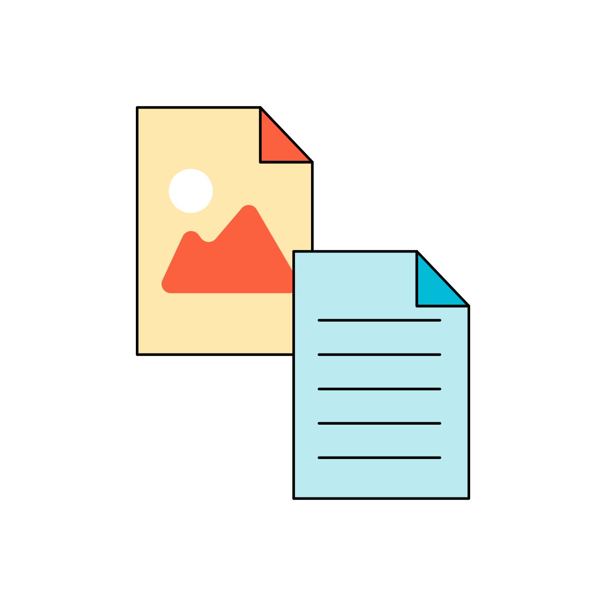

Generative AI is Machine Learning (ML) techniques that allow computer models to create new realistic
content such as images, text, audio and video. Gen AI focuses on developing algorithms and models capable
of generating new and original data that resembles the patterns and characteristics of existing data.
Unlike traditional AI models that are trained to recognize and classify data, generative AI models are
designed to create entirely new data samples.
Generative AI usecases
Language
Marketing(content)
Note Taking
Gene Sequencing
Code Development
Essay Generation
Visual
Video Generation
3D Models
Design
Image Generation
Auditory
Music Generation
Voice Generation
Generative AI
Data Labeling for Large Language Models
Why Objectways?
Awareness of ethical considerations
including biases
Strong foundation in mathematical concepts like
linear algebra, calculus, and probability theory
Best in Class
Creative Writers
Awareness of ethical considerations
including biases
Best in Class
Creative Writers
Strong foundation in mathematical concepts like
linear algebra, calculus, and probability theory
Awareness of ethical considerations
including biases
Best in Class
Creative Writers
Strong foundation in mathematical concepts like
linear algebra, calculus, and probability theory
Large Language Model Services
Image Captioning
Summarization
RLHF
Creative Content
Evaluation of model quality
Code completion and code suggestions
Copywriting
Interactive storytelling
Automatic question generation and answering
Programming assistants
Information retrieval and data extraction
Generative AI Services for images
Human feedback can play a crucial role in improving and fine-tuning
generative AI models for image generation. Incorporating human feedback helps generative models produce more
realistic, relevant, and desired images.
Here's how our human feedback can assist generative AI images:
Our annotators are trained to identify and correct biases in the generated images, ensuring that the
model produces images that are inclusive and representative.
For imbalanced datasets, our human feedback team guide the model to generate more examples of
underrepresented classes, improving overall model performance.
Our Human feedback team help to identify instances where the generative model produces images that
don't match the intended distribution or exhibit anomalies.
Our annotators are trained to provide feedback on specific parts of a generated image that need
improvement or modification. This can guide the model to focus on refining certain aspects while
retaining other desirable characteristics.
Generative AI Services for Texts
Human feedback play a crucial role in improving Large Language Models and
here are a few ways how we are assisting our customers,
Our Human feedback teams are trained to guide the model's creativity and generate more original,
engaging, and imaginative content.
We have the best in class creative writers who assist with conversations to be used to train the model
to engage in more natural and coherent dialogues.
Our experts can guide the model to use more appropriate language and tones based on specific contexts,
making the generated text more suitable for different communication styles or audiences.
Our Human feedback team can identify and rectify instances where the model generates incorrect or
low-quality information.
Our experts can guide the model to use more appropriate language and tones based on specific contexts,
making the generated text more suitable for different communication styles or audiences.
We assist customers to identify and reduce biases present in the model's output. Feedback highlighting
biased or inappropriate responses are used to adjust the model's training and fine-tuning processes,
making it more equitable and sensitive to diverse perspectives.
Accelerate your engagement with key use cases
Image generation
Create realistic and artistic images of various subjects, environments, and scenes from language
prompts.
Chatbots
Build conversational interfaces such as chatbots and virtual assistants to enhance the user
experience for your customers.

Text generation
Create new pieces of original content, such as short stories, essays, social media posts, and
webpage copy.
Search
Search, find, and synthesize information to answer questions from a large corpus of data.
Text summarization
Get a summary of textual content, such as articles, blog posts, books, and documents, to get the
gist without having to read the full content.
Personalization
Help customers find what they’re looking for with more relevant and contextual product
recommendations than word matching.
Customer Stories
Objectways has been engaged in many Generative AI projects across
multiple customers and labeling platforms for the past 8 months. Here are few sample projects we have been
engaged with,
Image Summarization and Image captioning
In today's visual-centric landscape with ease using ImageSummarize.com.
Amidst the deluge of online images, our expertise lies in leveraging advanced tech for concise image
summarization. Empowering comprehension, analysis, and informed choices, we simplify intricate visual
data through cutting-edge solutions.
Chatbot response ranking
The project involves interacting with a fitness chatbot on a particular
topic and ranking the response on scale (1:10) for understanding, helpfulness, coherence,
completeness, accuracy, language quality, relevance, user experience, style, error handling and ideal
response.
Relevance Ranking
A large shoe and apparel company wanted to build a natural language
search application. The task involved creating search terms (aka prompts) for images to build a
training dataset. During evaluation tasks, annotators were to rank images in the order of their
relevance with respect to search.
Image Generation Evaluation
A stealth start up is building an art studio that has Image generation
capabilities. Objectways human evaluators perform assessments of various aspects such as realism,
content relevance, artifact detection, diversity evaluation, style and aesthetics, safety and content
moderation.
Workforce Qualification
At Objectways, we have developed a multi-level hiring process to ensure
the hiring bar is kept higher. We have 400+ skilled language experts and access to a broader skilled pool. We
typically look for graduates in Arts, Media & Communication, Journalism. The process includes following
The language test is a grammar test comprising of 20 multiple choice questions equivalent to B2(Upper
Intermediate) Level. We also have a few team-leads who have Level C2 (Proficient) skills.
Analytical language tests assess the ability to understand the structure and intricacies of a
language, focusing on deeper comprehension and language usage in various contexts. The test levels
typically align with broader language proficiency levels, but with a particular emphasis on parsing
complex structures, understanding nuances, and demonstrating proficiency in both comprehension and
production of the language in various scenarios. We test for Advanced Analytical (Equivalent to B2)
that focuses on the following aspects,
Intricate sentence structures, including various conditionals, subjunctive moods, and reported
speech.
Distinguishing between nuances in meanings based on word choice or order.
Identifying and understanding the function of lesser-known word classes and structures, like
gerunds, participles, or cleft sentences.
LLM projects can encompass a wide variety of tasks but generally are broadly categorized as
classification, summarization, or generation. We assess the new hires on sample tasks from our prior
projects and compare output to the golden set.